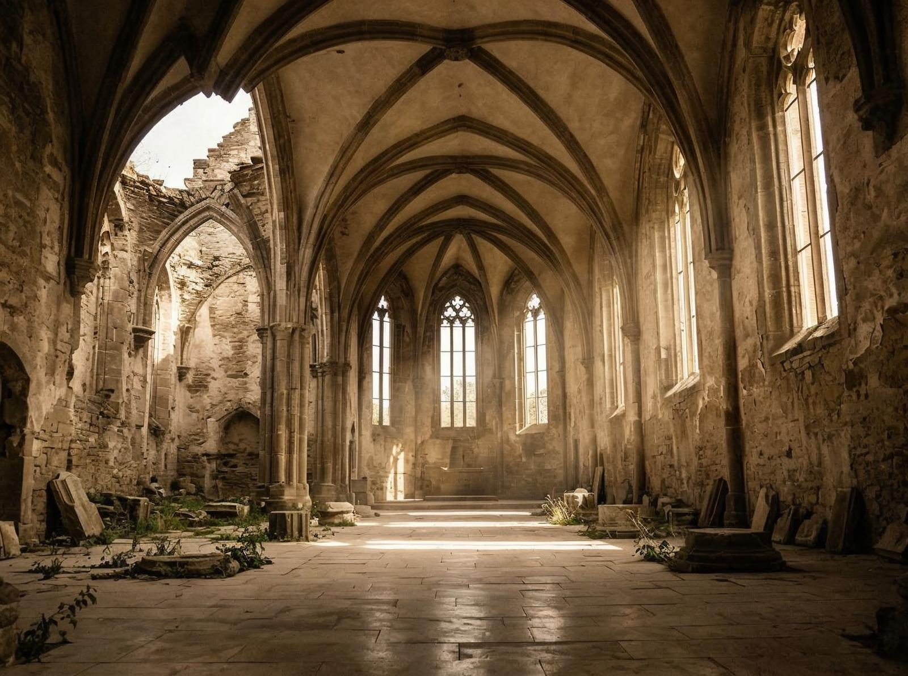
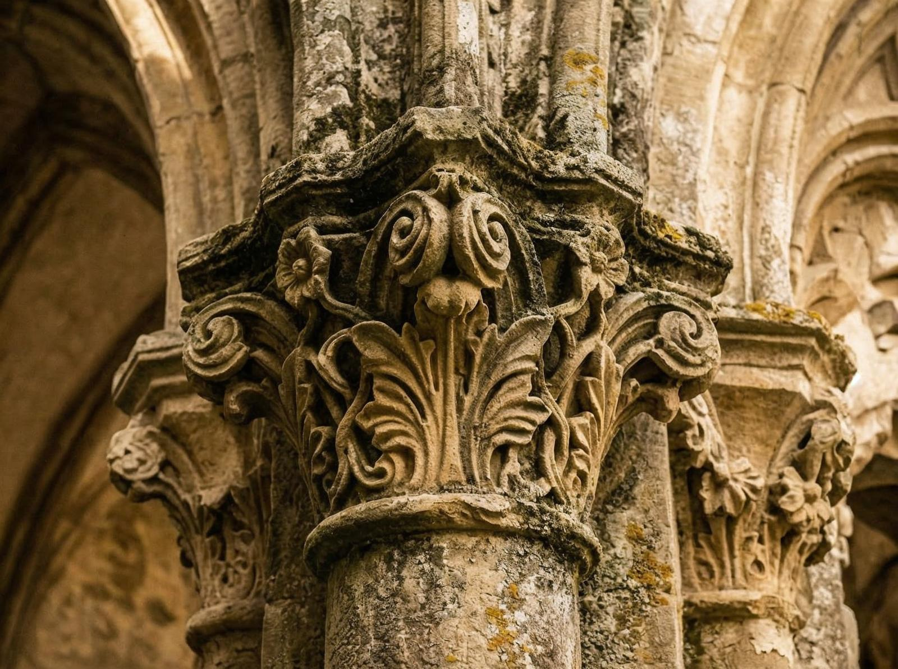

Coordonatele îmi sunt notate în agendă: 45° 42′ 36″ N 24° 45′ 00″ E. Mănăstirea Cârța. Situată în Țara Făgărașului, pe drumul național DN1, între Sibiu și Brașov. Un nume simplu, dar locul e orice altceva decât simplu. E abație. E istorie. E supraviețuire.
Puțini știu că Mănăstirea Cârța a fost cea mai estică abație cisterciană a Creștinății, a deținut un rol major atât în istoria Transilvaniei medievale, cât și în cea a ordinului cistercian. Nu e doar o mănăstire. E un punct cardinal în istoria Europei.
Interesant e că abația a fost fondată de călugării cistercieni din Igriș între 1202 și 1209, inițial construită din lemn, în stil romanic, influențat de tradițiile ordinului. Prima atestare are loc în 1202, iar în 1230 începe ridicarea mănăstirii din piatră.

Și iată ce e fascinant: Mănăstirea Cârța a trecut prin istorie. A fost distrusă în 1241 de invazia mongolă. Reconstruită. Distrusă din nou în 1421. Reconstruită din nou. Abia în 1872 a fost ridicată biserica ortodoxă română care există azi.
Detaliul care contează e că abația cisterciană din Cârța e singura mănăstire cisterciană care s-a păstrat parțial în România. Ceea ce a rămas e impresionant. Ruinele bisericii gotice, clădirile monahale, totul povestește o istorie de opt secole.
Problema e că puțini știu de ea. Mănăstirea Cârța nu e în ghidurile turistice principale. Nu e pe listele must-see. E acolo, în Țara Făgărașului, așteptând să fie descoperită. Oamenii vin, admiră, pleacă. Se întorc. Admiră din nou. E un ciclu care continuă, chiar dacă nu e massiv.

Și totuși există. E acolo, pe DN1, oferind o vedere care nu se găsește în alte locuri. Oamenii o fotografiază. O împărtășesc. Dar totuși, puțini știu că e cea mai estică abație cisterciană a Creștinății.
Nu exagerez importanța. E fapt, nu ficțiune. Patrimoniul are nevoie de protecție. Istoria are nevoie de respect. România are nevoie să învețe că patrimoniul nu e doar despre ce e frumos, ci și despre ce contează în istorie.
În spatele fațadei obișnuite, România ascunde surprize — locuri istorice unice, abații care au avut un rol major, patrimoniu care a continuat să existe. Mănăstirea Cârța e una din ele, după 800 de ani.
Probabil că nu putem să ne întoarcem la același nivel. Dar putem învăța. Putem învăța că istoria nu e doar în cărți. E în locuri. E în ruine. Și că, uneori, cele mai importante lucruri sunt cele pe care le-am uitat.
Mănăstirea Cârța e o amintire. O amintire a ceea ce am construit, a ceea ce am protejat, a ceea ce am continuat. Și o amintire a ceea ce putem fi, dacă învățăm din trecut.